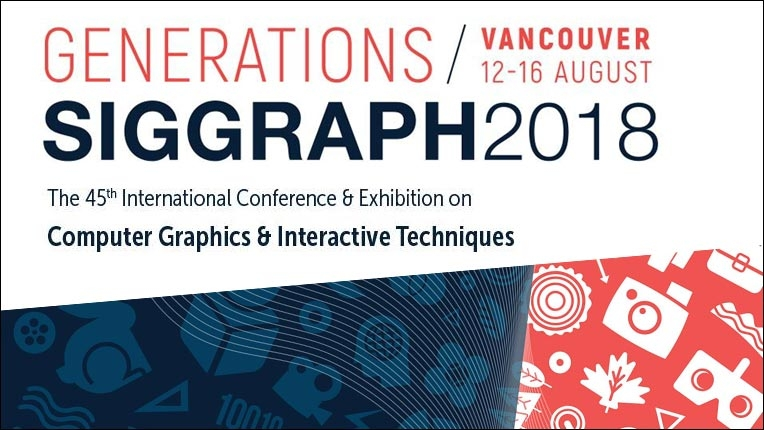

We see a world where computing helps solve tomorrow’s problems – where we use our knowledge and skills to advance the profession and make a positive impact.

ETHICS IN COMPUTING
ACM Updates Code of EthicsACM has updated its Code of Ethics and Professional Conduct. The revised Code of Ethics addresses the significant advances in computing technology since the 1992 version, as well as the growing pervasiveness of computing in all aspects of society. ACM’s Code of Ethics is considered the standard for the computing profession, and has been adopted by computing professionals, organizations and technology companies around the world. The Code is a collection of principles and guidelines designed to help computing professionals make ethically responsible decisions in professional practice.

PEOPLE OF ACM INTERVIEW Meet Jim HendlerJames A. “Jim” Hendler is the Director of the Institute for Data Exploration and Applications and the Tetherless World Professor of Computer, Web and Cognitive Sciences at Rensselaer Polytechnic Institute. He also serves as the Director of the joint Rensselaer-IBM HEALS project. He is an ACM Fellow and Chair of ACM’s US Technology Policy Committee. “I look forward to helping to make ACM a trusted, 'must-consult' organization for policy makers.” |

SIGGRAPH 2018, August 12 to 16, Vancouver, Canada
With the theme "Generation New," SIGGRAPH will be a five-day immersion into the latest innovations in computer graphics, animation, virtual reality, games, digital art, mixed reality and emerging technologies. A Doctoral Consortium is being added this year. Rob Bredow, Senior Vice President, Executive Creative Director, and Head of Industrial Light & Magic, will keynote. |
 Review the Reddit AMA on the ACM Code of Ethics
Review the Reddit AMA on the ACM Code of Ethics
On August 16, ACM Committee on Professional Ethics members Catherine Flick and Michael Kirkpatrick fielded questions about the ACM Code of Ethics and ethics in computing in general in a Reddit "Ask Me Anything." Read the questions and responses archived on Reddit here: https://redd.it/97suot |
 ACM Names Vicki L. Hanson CEO/Executive Director
ACM Names Vicki L. Hanson CEO/Executive Director
ACM has named Vicki L. Hanson to the position of executive director and CEO effective July 1, 2018. As ACM’s most senior staff member, Hanson will work with ACM’s volunteer community to provide strategic vision and to develop sustainable business models to ensure ACM’s continued worldwide membership, publications and revenue growth. ACM President-elect Cherri Pancake said, “Having served ACM for many years in various volunteer capacities, Vicki’s unique insights into the organization and how it serves the profession should serve us well to ensure a sustainable future for ACM." |

PEOPLE OF ACM INTERVIEW Meet Jim HendlerACM's newly-elected officers: For the term 1 July 2018 — 30 June 2020 President Cherri M. Pancake Vice President Elizabeth Churchill Secretary/Treasurer Yannis loannidis For the term 1 July 2018 — 30 June 2022 Members at Large Claudia Bauzer Medeiros Theo Schlossnagle |

PEOPLE OF ACM INTERVIEW 2018 ACM General ElectionNewly-Elected Officers for the term 1 July 2018 - 30 June 2020: President: Abhiram Ranade, IIT Bombay Vice President: Venkatesh Raman, ITMSc Chennai Secretary/Treasurer: Maria Choudhary, Oracle Members-at Large for the term 1 July 2018 - 30 June 2022: Supratik Chakraborty, IIT Bombay Meenakshi D'Souza, IIIT Bangalore Manish Gupta, VideoKen, Bangalore Jayant Haritsa, IIS Bangalore Pankaj Jalote, IIIT Delhi Venkatesh Kamat, Goa University Hemangee K. Kapoor, IIT Guwahati Sudeshna Sarkar, IIT Kharagpur Vasudeva Varma, IIIT Hyderabad |
 ACM India Council Election
ACM India Council Election
James A. “Jim” Hendler is the Director of the Institute for Data Exploration and Applications and the Tetherless World Professor of Computer, Web and Cognitive Sciences at Rensselaer Polytechnic Institute. He also serves as the Director of the joint Rensselaer-IBM HEALS project. He is an ACM Fellow and Chair of ACM’s US Technology Policy Committee. “I look forward to helping to make ACM a trusted, 'must-consult' organization for policy makers.” |

PEOPLE OF ACM INTERVIEW Proceedings of the ACM SeriesThe 2018 Global Survey of Mathematical, Computing, and Natural Scientists needs people in mathematical, computing and natural sciences, including students, to share their career and educational experiences. The data being collected will include focused information about women in these fields. The survey is being conducted by The Gender Gap in Science project, funded by the International Council for Science, a collaboration of several organizations including ACM. |

PEOPLE OF ACM INTERVIEW Meet Jim HendlerJames A. “Jim” Hendler is the Director of the Institute for Data Exploration and Applications and the Tetherless World Professor of Computer, Web and Cognitive Sciences at Rensselaer Polytechnic Institute. He also serves as the Director of the joint Rensselaer-IBM HEALS project. He is an ACM Fellow and Chair of ACM’s US Technology Policy Committee. “I look forward to helping to make ACM a trusted, 'must-consult' organization for policy makers.” |
|
CACM REPORTS CACM August 2018 - Multiparty Privacy in Social MediaOnline social networks are not only huge in scale, they are predicted to keep growing in the coming years both in the number of users and in the amount of data users upload and share. There have been many efforts devoted to study privacy in social media and how to protect users' personal information since the very early days of social media. However, most of these efforts have focused on privacy from an individual point of view. Privacy is not just about what you say or disclose about yourself. It is also about what others say or disclose about you. In this video, Jose M. Such discusses "Multiparty Privacy in Social Media,” a Review Article in the August 2018 issue of Communications of the ACM. |
 Prediction-Serving Systems
Prediction-Serving Systems
ACM Queue’s “Research for Practice” is your number one resource for keeping up with emerging developments in the world of theory and applying them to the challenges you face on a daily basis. In this installment, Dan Crankshaw and Joey Gonzalez provide an overview of machine learning server systems. What happens when we wish to actually deploy a machine learning model to production, and how do we serve predictions with high accuracy and high computational efficiency? Dan and Joey’s curated research selection presents cutting-edge techniques spanning database-level integration, video processing, and prediction middleware. Given the explosion of interest in machine learning and its increasing impact on seemingly every application vertical, it's possible that systems such as these will become as commonplace as relational databases are today. |
 Become an Ambassador for ACM
Become an Ambassador for ACM
Encourage your colleagues to join ACM, share the benefits of ACM and receive free gifts for participating. Your support of ACM is critical to our continuing efforts to advance computing as a science and a profession. |
 Bringing You the World’s Computing Literature
Bringing You the World’s Computing Literature
The most comprehensive collection of full-text articles and bibliographic records covering computing and information technology includes the complete collection of ACM's publications. |
 Lifelong Learning
Lifelong Learning
ACM offers lifelong learning resources including online books from Safari, online courses from Skillsoft, webinars on the hottest topics in computing and IT, and more. |
The Association for Computing Machinery, a global scientific and educational organization representing the computing community, expresses concern over US President Donald J. Trump’s Executive Order imposing suspension of visas to nationals of six countries. The open exchange of ideas and the freedom of thought and expression are central to the aims and goals of ACM. ACM supports the statute of International Council for Science in that the free and responsible practice of science is fundamental to scientific advancement and human and environmental well-being. Such practice, in all its aspects, requires freedom of movement, association, expression and communication for scientists. All individuals are entitled to participate in any ACM activity.